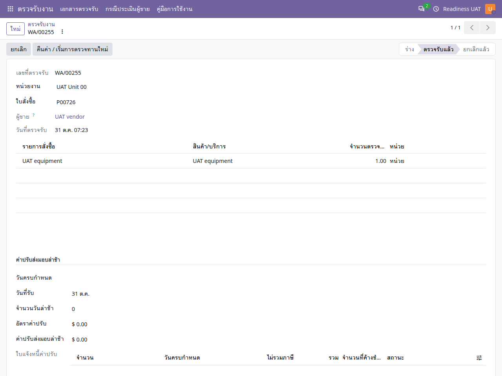

คู่มือการใช้งาน
ตรวจรับงาน
ตรวจรับสินค้าและบริการ บันทึกคณะกรรมการ ผลประเมินผู้ขาย และส่งต่อการเรียกเก็บเงิน
ไม่พบข้อความ ลองใช้คำอื่นหรือล้างคำค้นหา
เริ่มใช้งานและอ่านหน้าจอ
เปิดแอปจากเมนูหลัก แล้วเลือก คู่มือการใช้งาน คู่มือเปิดในแท็บใหม่เพื่อให้ดูพร้อมหน้าทำงานได้ เลือกแอปอื่นจากรายการด้านซ้าย หรือค้นหาคำในคู่มือนี้ และใช้ปุ่มพิมพ์ / บันทึก PDF เมื่อต้องการสำเนา
- ตรวจบริษัทที่มุมขวาบนและหน่วยงานในเอกสารก่อนสร้างหรืออนุมัติ เมนูและปุ่มขึ้นกับสิทธิ์ของบัญชี
- หลังแก้ข้อมูล ให้ใช้ปุ่มบันทึก / ไอคอนบันทึกตามที่แบบฟอร์มแสดง แล้วตรวจสถานะและเลขเอกสารก่อนออกจากหน้า
- ภาพประกอบเป็นข้อมูลจำลอง ชื่อรายการ ภาษา หรือเลขเอกสารอาจต่างจากบัญชีของคุณ ตัวเลขในภาพไม่ใช่ค่าที่ต้องกรอก
- ข้อความผิดเงื่อนไขให้จดเลขเอกสารและข้อความที่แสดง ส่งให้ผู้รับผิดชอบงานตรวจ อย่าส่งรหัสผ่านหรือข้อมูลเข้าสู่ระบบ
- ถ้าคู่มือเปิดแล้วภาพหรือภาษาเก่าค้าง ให้บันทึกงานในหน้าระบบก่อน แล้วรีเฟรชแท็บคู่มือ
ก่อนตรวจรับ
- ใบสั่งซื้อ
- เอกสารตรวจรับร่าง
- ตรวจตามลำดับเมื่อกำหนด
- ตรวจรับ
- เรียกเก็บเงิน / ค่าปรับ
จำนวนตรวจรับต้องอ้างอิงใบสั่งซื้อและเอกสารรับสินค้าตามนโยบายของบริษัท งานบริการอาจไม่มีใบรับสินค้าคลัง แต่ยังต้องตรวจเงื่อนไขเอกสารตรวจรับของงานนั้น
สร้างเอกสารตรวจรับ
ตรวจรับงาน → เอกสารตรวจรับ
- เปิดจากใบสั่งซื้อด้วยปุ่มสร้าง/เปิดตรวจรับ หรือเปิดรายการตรวจรับตามสิทธิ์
- เลือกบริษัท หน่วยงาน ผู้ขาย ใบสั่งซื้อ และวันตรวจรับให้ตรงกัน
- เพิ่มบรรทัดจากรายการใบสั่งซื้อ ระบุจำนวนที่รับจริง งวดที่เกี่ยวข้อง และเอกสารรับสินค้าเมื่อกำหนด
- ตรวจการตรวจรับก่อนหน้า ปริมาณค้าง และหลักฐานส่งมอบ ก่อนบันทึก

คณะกรรมการและลำดับตรวจ
- ระบุคณะกรรมการและบทบาทให้ครบตามเอกสาร
- หากใช้กระบวนการไร้กระดาษ ให้ขอตรวจทานแล้วตรวจผู้ตรวจและลำดับในตารางประวัติ
- ผู้ตรวจที่ถึงลำดับอนุมัติหรือปฏิเสธพร้อมพิจารณารายการและหลักฐาน
- ตรวจผลประเมินผู้ขายเมื่อกำหนด ก่อนให้ผู้จัดการดำเนินการตรวจรับ
ยืนยันตรวจรับและส่งต่อบัญชี
- ผู้มีสิทธิ์ตรวจรับตรวจวันที่ จำนวน และผลการตรวจ แล้วกด ตรวจรับ
- ตรวจสถานะเอกสารและปริมาณที่ยอมรับแล้ว หากตรวจรับบางส่วน ให้เหลือปริมาณส่วนค้างตามความจริง
- กรณีผูกแผนงวด ใช้ปุ่มสร้างใบเรียกเก็บเงินของงวดที่เกี่ยวข้อง แล้วส่งให้บัญชีตรวจและลงบัญชี
- การตรวจรับไม่ใช่หลักฐานว่าได้ชำระเงินแล้ว ให้ตรวจเอกสารบัญชีและการจ่ายเงินแยก
งานส่งล่าช้าและค่าปรับ
เมื่อมีค่าปรับที่ระบบคำนวณหรือกำหนดตามข้อมูลของงาน ให้ตรวจวันกำหนดส่ง วันรับ และยอดค่าปรับก่อนสร้างเอกสารเรียกเก็บ/ลดหนี้ตามเส้นทางที่องค์กรใช้ เอกสารค่าปรับที่สร้างยังต้องผ่านบัญชี คู่มือนี้ไม่กำหนดอัตราหรือแทนเงื่อนไขสัญญาจริง
แก้ไขหรือเริ่มตรวจใหม่
| อาการ | วิธีตรวจ |
|---|---|
| จำนวนตรวจรับเกิน | ตรวจยอดที่เคยรับและปริมาณในใบสั่งซื้อ รวมทั้งหน่วยนับ |
| ยังไม่ผ่านการตรวจตามลำดับ | เปิดประวัติการตรวจและผู้ตรวจปัจจุบัน |
| ตรวจรับไม่ได้เพราะรับสินค้า | ตรวจใบรับสินค้าและนโยบายบังคับรับสินค้าของบริษัท |
| ต้องแก้เอกสารที่ตรวจรับแล้ว | ให้ผู้มีสิทธิ์ใช้กลับเป็นร่าง/เริ่มตรวจใหม่ตามเงื่อนไข และตรวจเอกสารบัญชีที่ผูกอยู่ก่อน ระบบคงประวัติรอบเดิม |